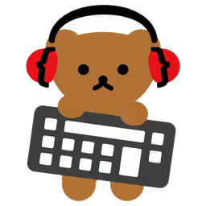

かなはフリック入力
中央タップと上下左右のフリックでかなを入力します。入力した読みはMozcが端末内で変換し、候補をキーボード上に表示します。
Android Flick Keyboard by masuidrive

Android Flick Keyboard by masuidrive
日本語、英字、数字、記号を、同じフリック操作で扱えるAndroidキーボードです。変換には端末内のMozcを使います。
かな、英字の大文字、数字、記号などを上下左右のフリックで直接選べます。目的の文字までのタップ回数を減らせます。
中央タップと上下左右のフリックでかなを入力します。入力した読みはMozcが端末内で変換し、候補をキーボード上に表示します。
タップで小文字、上でその一文字だけ大文字、下で数字またはASCII記号を入力します。
Spaceを動かすと最初の方向で縦軸か横軸が決まり、指を離すまで斜め移動を防ぎます。
C/AキーからCtrlとAltを選べ、削除キーの下フリックでEscを入力できます。
設定でDual Flickを有効にすると、横幅が広いとき日本語の12キーを左右2組表示します。Foldなら、閉じたスマホ表示と開いたタブレット表示の両方で使えます。
左下キーを左へフリックすると音声入力レイヤーで認識を始めます。最下段の句読点、Space、Enterで入力欄を編集しても認識は続きます。「認識中」の後、候補を固定パネルに1行ずつ表示します。候補を選ぶたびに次の認識へ進め、最終結果がないときは途中結果を選べます。
IMEは入力欄の内容へ触れるソフトウェアです。masuidrive-kbd v0.15.6は通信機能を持たず、Mozc、学習履歴、個人辞書の参照を端末内で完結させます。
入力、候補生成、確定、学習まで通信を使いません。入力文字列をログへ記録せず、private入力欄では学習しません。
音声入力時だけマイク権限を求めます。録音音声と認識結果を保存せず、ネットワーク権限も要求しません。
Interactive reference
操作モックでは、絵文字の履歴や各レイヤーのフリックをブラウザ上で試せます。音声レイヤーは「認識中」から固定パネルの候補確定、次の認識までを繰り返せます。モックの入力欄は読み取り専用で、画面上のキーと候補だけで入力します。変換候補は説明用の内蔵辞書で、Android版のMozcとは異なります。